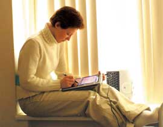
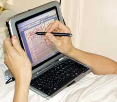
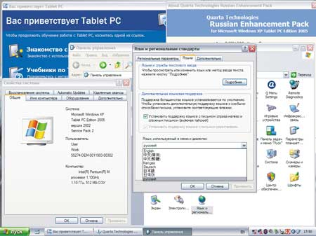
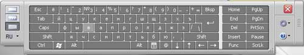
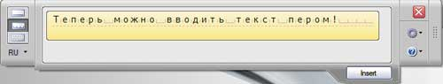
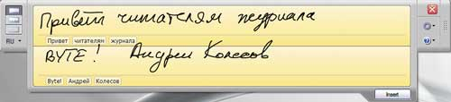
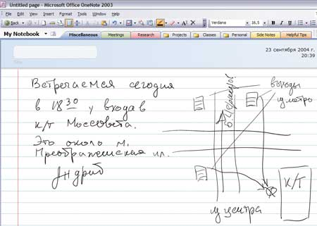
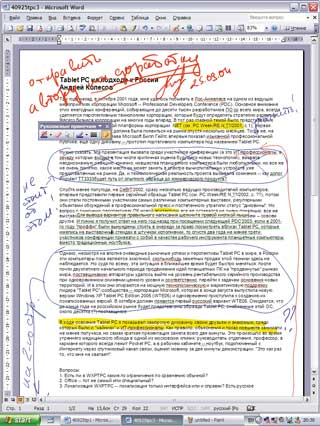

Андрей Колесов
Немногим более двух лет назад, осенью 2002 г., корпорация Microsoft (http://www.microsoft.com) представила на рынке первую версию ОС Windows XP Tablet PC Edition, предназначенную для нового типа устройств - планшетных. На тот момент эти вычислительные устройства, снабженные прототипами будущей ОС, уже год демонстрировались на различных выставках ведущими поставщиками техники, став объектом регулярных обсуждений в профессиональной прессе. И все же до недавнего времени Tablet PC казались скорее диковинкой, рыночные перспективы которой оставались не очень понятными: цена устройств была существенно выше, чем у аналогичных по мощности ноутбуков, а возможности использования новых методов перьевого ввода вызывали сомнения.
Судя по всему, 2004 г. стал переломным в судьбе Tablet PC - эти компьютеры к тому времени уже перекочевали с выставочных стендов на прилавки магазинов и далее, на рабочие места пользователей. Наглядное подтверждение этому можно было видеть в октябре 2003 г. на конференции Microsoft Professional Developer: если за два года до того участники мероприятия стояли в очереди, чтобы посмотреть вблизи Tablet PC, представленные на выставочных стендах в штучных количествах, то теперь многие из них привезли с собой в качестве рабочего инструмента планшетные компьютеры вместо традиционных ноутбуков.
Важным фактором, ускорившим продвижение Tablet PC, стал выпуск в августе 2004 г. корпорацией Microsoft новой версии Windows XP Tablet PC Edition 2005, а затем и появление в ней поддержки нескольких языков, в том числе русского.
Microsoft и Tablet PC
Tablet PC - не единственный тип планшетных ПК, представленных на рынке. Tablet PC - это компьютер, который выпускается по спецификациям корпорации Microsoft; соответственно, главная его характеристика - возможность работы под управлением ОС Microsoft. Когда три года назад компания впервые представляла прототипы Tablet PC, некоторые наблюдатели высказывали предположение, что Microsoft может пойти по пути поставок этих устройств под собственной торговой маркой, расширив арсенал своих аппаратных продуктов. Однако очень скоро стало понятно, что корпорация не собирается изменять своему стратегическому принципу разделения труда, отдав все вопросы с "железом" производителям техники и одновременно налаживая сотрудничество с независимыми разработчиками прикладного ПО. Сегодня планшетные ПК типа Tablet PC выпускают более сорока производителей компьютеров, в том числе практически все мировые лидеры в области ноутбуков.
Основная идея Tablet PC - сочетание вычислительной мощности ноутбуков и новых способов чернильно-перьевого (P&I, pen-and-ink) ввода с помощью сенсорного экрана-планшета достаточно большого размера (диагональю 10 дюймов и более). В результате пользователь получает целый ряд качественно новых возможностей при работе со знакомыми офисными и деловыми приложениями в их полнофункциональном варианте.
В первую очередь имеется в виду рукописный ввод при общении с компьютером. Выясняется, что нередко можно вообще отказаться от таких, казалось бы, неотъемлемых компонентов ПК, как клавиатура и мышь. Пользователи вдруг с удивлением обнаружили, что писать от руки можно очень быстро, а главное - удобно (например, при конспектировании лекций, когда нужно быстро вводить не только текст, но и различные рисунки, графики, формулы). Правда, многим теперь придется восстанавливать утраченные навыки письма, но в этой связи стоит вспомнить, что к нынешним скоростям клавиатурного ввода мы шли через тыканье в клавиши одним пальцем.
Традиционное представление о ценности компьютеров связано с возможностью обработки информации в алфавитно-цифровом виде, поэтому когда речь заходит о рукописном вводе, сразу встает вопрос о методах его распознавания и оцифровки. Безусловно, это очень важная тема, но не нужно забывать, что существует множество практических задач, в которых удобнее работать с рукописными образами, без дополнительных преобразований. Говоря о перспективах естественных способов ввода, следует упомянуть и о речевых технологиях, в которых в последние годы имеет место заметный прогресс.
Реализация
Так или иначе, но уникальные качества Tablet PC (вычислительная мощность плюс естественный пользовательский интерфейс) позволяют расширить возможности применения вычислительной техники. Ведь ноутбуки по сути дела предназначены для работы в достаточно обустроенных офисно-домашних условиях, их мобильность заключается в удобстве переноски. Планшетные ПК позволяют перейти к более высокому уровню мобильности, обеспечивая удобную работу практически в любых условиях (рис. 1).
|  |  |
| Рис. 1. С Tablet PC удобно работать даже на подоконнике в перерыве между лекциями или лежа на кровати. Клавиатуру можно отсоединить, чтобы не мешала.
|
|
Сегодняшние Tablet PC по вычислительной мощности и функциональности в целом соответствуют недорогим офисным ноутбукам, обеспечивая в числе прочего поддержку беспроводных соединений, дисплей с высоким разрешением, автономное питание от батарей, подключение внешних устройств - монитора, клавиатуры, мыши. Большинство планшетных ПК используют мобильные технологии Intel Centrino, поддерживая широкий круг индустриальных стандартов безопасности для локальных и беспроводных сетей.
По состоянию на осень 2004 г. средняя конфигурация Tablet PC имеет такие параметры: процессор - Pentium III или Pentium M с частотой 800-1800 МГц, объем ОЗУ 256-512 Мбайт (с возможностью расширения до 1-2 Гбайт), жесткий диск 20-80 Гбайт, встроенная поддержка беспроводных соединений, инфракрасный порт, набор разъемов - USB, телефон, Ethernet, дисплей, наушники, микрофон. И, конечно же, перо для ввода.
Перо полностью воспроизводит операции, выполняемые мышью, - щелчок, двойной щелчок, перетаскивание, работа с левой и правой кнопкой. Это делается путем нажатия небольшой кнопки, а также таких действий, как удержание пера в одной позиции экрана. В некоторых моделях Tablet PC для удобства работы без клавиатуры непосредственно на корпусе планшета располагаются часто используемые клавиши (например, Esc, Tab), функции которых можно перепрограммировать.
В отличие от ноутбуков, в Tablet PC отсутствуют встроенные приводы для внешних носителей - CD, DVD. Но главное - более скромные параметры видеосистемы в целом и экрана в частности: так, сегодняшний стандарт - это 10,4 дюйма XGA, реже - 12,1 или даже 14,1 дюйма. Зато габариты устройств и их масса (от 1,2 до 2 кг) больше подходят для мобильного применения, причем увеличение массы происходит в основном за счет повышения мощности батарей.
Очевидно, что такой компьютер не очень подходит для ИТ-профессионалов, работающих в офисе, или для любителей игр. Но он открывает новые возможности для применения ПО профессионального уровня прикладными специалистами, причем непосредственно в условиях мобильных деловых процессов. Именно поэтому поставщики Tablet PC особое внимание уделяют вертикальным рынкам - системе образования, здравоохранению, финансовой сфере и т. д.
Что касается ПО, то нужно подчеркнуть, что комплектация и установка его на Tablet PC выполняются примерно так же, как для настольных систем: в частности, на все программные продукты (ОС, приложения и т. п.) нужно иметь отдельные лицензии. В комплектацию конкретного компьютера входит то ПО, которое считает нужным установить его поставщик согласно соответствующим OEM-соглашениям. В целом на Tablet PC работают те же самые приложения, что и на обычных ПК, использование в этих программах специфических возможностей планшетного ввода достигается в основном за счет подключения дополнительных модулей. Примером тому служит сама ОС Windows XP Tablet PC Edition 2005, которая содержит средства перьевого ввода при работе с обычным пакетом Microsoft Office 2003.
В настоящее время компьютеры Tablet PC выпускаются в двух основных вариантах: планшеты (slate) и комплексная конфигурация (convertible). Разница между ними заключается в отсутствии/наличии клавиатурного блока в базовом комплекте. Впрочем, это различие достаточно условно: для автономных планшетов можно приобрести и подключить внешнюю подставку и клавиатуру и использовать компьютер в настольном варианте, а для устройств второго типа - снять клавиатуру и работать, как с грифельной доской.
С учетом нацеленности Tablet PC на довольно широкий круг пользователей (от мобильных до офисных работников) дизайн и компоновка у этих компьютеров более разнообразны по сравнению с традиционными ноутбуками. Это особенно заметно в автономных планшетах за счет реализации специальных наборов функций и средств управления, обеспечивающих применение компьютеров в вертикальных решениях.
До недавнего времени одним из основных недостатков Tablet PC всегда считалась высокая для массового рынка стоимость - от 1700 до 2300 долл. на конец 2003 г. Однако за последние месяцы можно было наблюдать довольно быстрое снижение цен на эти устройства. Например, HP-Compaq Tablet PC TC 1100 (Celeron 800 МГц, 256 Мбайт ОЗУ, жесткий диск 30 Гбайт, экран 10,4 дюйма XGA, встроенная клавиатура), который автор использовал при подготовке данного обзора, стоит сегодня около 1200 долл. И есть все основания ожидать, что по мере расширения массового производства компьютеров (в первую очередь китайскими компаниями) уже в 2005 г. базовые модели уложатся в ценовой диапазон до 1000 долл., и тем самым стоимостной разрыв с аналогичными по мощности ноутбуками сократится до минимума.
Windows для Tablet PC
Версия Windows XP Tablet PC Edition 2005 (WTE05) выпущена в конце августа прошлого года и включает все технологические и функциональные новшества сервисного пакета Windows XP Service Pack 2, в том числе повышение уровня безопасности на базе технологии Security Technologies и улучшенную поддержку беспроводных средств Bluetooth. Кроме того, вся настройка и управление ресурсами безопасности теперь выполняются через единый интерфейс - Центр обеспечения безопасности Windows (Windows Security Center), который отслеживает состояние настроек межсетевого экрана, функции автоматического обновления антивирусного ПО третьих поставщиков. Это дает пользователям возможность быстро узнать, включены ли эти важные функции безопасности вовремя или необходимо принять дополнительные меры для повышения степени защиты ПК.
Нужно также отметить, что многие внутренние механизмы WTE05 основаны на .NET Framework 2.0, а некоторые компоненты этой ОС (например, элементы пользовательского интерфейса) уже сейчас построены на технологических решениях Windows следующего поколения - Longhorn.
С точки зрения специфики планшетных компьютеров основные новшества WTE05 связаны с расширенной поддержкой чернильно-перьевого (P&I, pen-and-ink) ввода текста, функции которого доступны во всех компонентах ОС и WTE-совместимых приложений: это использование единой планшетной панели ввода, распознавание в реальном времени, коррекция по месту ввода, а также установка контекстно-зависимых правил распознавания. Существенно улучшена интеграция с приложениями Microsoft Office 2003 - пользователь может вносить рукописные примечания и комментарии в любом месте документов Word, рабочих листов Excel и презентаций PowerPoint, а также отправлять рукописные письма через Outlook.
В состав WTE05 входит также технология распознавания речи (только для английского языка), что позволяет применять речевой ввод вместо мыши, клавиатуры или пера. Tablet PC может эффективно использоваться для чтения электронных книг, для чего служит встроенная технология Microsoft ClearType. Для удобства работы ориентацию экрана-планшета легко изменять, выбирая горизонтальное или вертикальное положение.
Разработчикам предлагается новый набор средств WTE SDK 1.7, который позволяет создавать приложения с различными вариантами применения чернильно-перьевого ввода. С его помощью можно проводить контекстно-зависимое распознавание рукописного текста в различных полях заполняемых форм. Благодаря SDK можно также применять P&I-ввод в Web-приложениях. В настоящее время более 300 компаний-разработчиков во всем мире создают специализированные приложения для Tablet PC.
До выпуска версии 2005 ОС Windows XP Tablet PC Edition существовала на шести языках (английском, французском, немецком, японском, корейском и китайском); теперь же в ней реализована поддержка еще 13 европейских языков, в том числе русского. Благодаря пакету многоязычной поддержки для планшетных компьютеров - Windows XP Tablet PC Edition 2005 MUI Pack (Multilingual User Interface), пользователи и ИТ-администраторы могут переключать интерфейс ОС (в частности, меню, диалоговые окна, файлы обучения и справки) на любой из 19 поддерживаемых языков (рис. 2).
|  |
| Рис. 2. Выбор языка пользовательского интерфейса.
|
К сожалению, Tablet PC MUI Pack, который устанавливается поверх англоязычной версии, не включает систему рукописного и голосового ввода для других национальных языков. Такая поддержка организована за счет установки дополнительных модулей от независимых разработчиков. В настоящее время на российском рынке уже представлены две системы распознавания русского рукописного текста (технологии Pen-and-Ink), созданные при технической поддержке Microsoft партнерами корпорации, - это пакет PenReader Tablet PC Edition от Paragon Software (http://www.paragon.ru) и программа Russian Enhancement Pack for Tablet PC компании "Кварта Технологии" (http://www.quarta.ru). После установки такого ПО оно автоматически подключается к механизму перьевого ввода ОС, и все его функции становятся доступны для всех компонентов ОС и приложений.
В России и других странах СНГ представлены Tablet PC целого ряда мировых и российских производителей - Acer, Everest, Fujitsu Siemens, Hewlett-Packard, Kvazar-Micro, LG, NEC, Panasonic, Rover Computers, Toshiba, Versiya и Webpanel.ru. Ожидается, что уже в начале 2005 г. они представят русифицированные планшетные компьютеры, укомплектованные программами распознавания русского языка. Пользователи, не имеющие пока таких возможностей, могут приобрести соответствующие модули в качестве дополнений.
Рукописный ввод
Средства рукописного ввода появились в программных продуктах Microsoft - Office XP и приложениях для Tablet PC - еще два-три года назад. С выпуском новой версии Windows XP Tablet PC Edition 2005 эти возможности существенно выросли. Помимо таких аспектов, как расширение функционала и большее удобство работы, нужно отметить, что данные технологии реализованы на уровне ОС (ранее они поддерживались в рамках отдельных приложений). Для отечественных пользователей наиболее важно то, что впервые появились средства распознавания рукописного слитного текста.
Текстовый P&I-ввод выполняется в WTE05 с помощью планшетной панели ввода (in-place Tablet Input Panel, TIP), где с помощью пера и сенсорного экрана реализуются три режима: имитации клавиатуры, рукопечатного (печатными буквами) и слитного рукописного ввода (с автоматическим распознаванием). Для вызова TIP служит пиктограмма на панели задач Windows или кнопка TIP Access, расположенная непосредственно в поле текстового ввода. TIP - часть операционной системы, поэтому она доступна как в компонентах самой ОС, так и в любых приложениях (автор проверил это, написав простой макрос для Word с визуальным текстовым полем).
Использование экранной клавиатуры напоминает ввод одним пальцем - не самый лучший способ общения с компьютером, но все же он гораздо быстрее и удобнее, чем набор текста SMS на мобильном телефоне (рис. 3). Рукопечатный вариант (с автоматическим распознаванием символов) кажется на первый взгляд непривычным и не очень быстрым (рис. 4). Но после небольшой тренировки - для этого ИТ-профессионалам придется вспомнить первый класс школы и поучиться правильно писать буквы - темп ввода может стать достаточно высоким.
|  |
| Рис. 3. Ввод с экранной клавиатуры.
|
|  |
| Рис. 4. Побуквенный ввод с распознаванием.
|
Однако наиболее интересен режим слитного рукописного ввода. В этой статье мы рассмотрим вариант решения компании "Кварта Технологии" - Russian Enhancement Pack for Tablet PC. В его основе лежит лицензированная технология распознавания рукописного ввода riteScript компании EverNote (http://www.evernote.com) - одного из мировых лидеров в этой области (те же технологии использует в своем ПО и Microsoft). Решение поддерживает три различных способа ввода текста: слитный рукописный, побуквенный и при помощи экранной клавиатуры. Распознавание выполняется с помощью словаря, содержащего более 7 млн словоформ русского языка; допускается подключение дополнительных словарей, создаваемых пользователем. Эта система стала первым программным решением, обеспечивающим распознавание русского слитного текста непосредственно в процессе его ввода. Ее отличительная особенность - использование большой базы различных почерков, что позволяет обойтись без предварительного обучения или тренировки пользователей.
Качество распознавания слитного текста можно оценить по тексту, приведенному на рис. 5. Но должны признаться откровенно: достичь желаемого результата автору удалось не сразу - первые попытки написать что-то ручкой давали какие-то не очень понятные каракули. Так что на разработчиков технологий распознавания надейся, но восстановить разборчивый почерк все же придется! Хотя в недалеком будущем скорее всего именно компьютеры смогут быстрее расшифровывать почерки, с которыми не всегда могут разобраться даже сами авторы.
|  |
| Рис. 5. Распознавание русского рукописного текста.
|
Оцифровка происходит в реальном времени - по мере ввода; при этом, кроме методов распознавания образов, используются лингвистические алгоритмы обработки текста с применением встроенных словарей (можно повышать качество распознавания, пополняя словари). Прямо в панели TIP можно откорректировать результат распознавания до вставки в основное текстовое окно приложения. Это делается вручную или путем выбора нужного словаря.
Оценивая возможности рукописного ввода, нужно иметь в виду, что мы находимся пока в самом начале освоения естественных, но уже подзабытых методов обмена информацией. Тут стоит вспомнить, с какими сложностями шло в свое время освоение клавиатуры, мыши. Разумеется, мы вправе надеяться и на встречные усилия со стороны разработчиков ПО. Так, хорошо бы им дополнить панель TIP более удобным механизмом переключения языков при слитном вводе и разрешить редактирование прямо в окне рукописного ввода, например, с помощью ластика. Полезны и средства настройки механизма распознавания с использованием образцов почерка конкретного человека (как это делается в движке распознавания речи).
Практические задачи распознавания при вводе информации не ограничиваются только обработкой текста: может, например, потребоваться ручной ввод графиков и блок-схем с их последующим автоматическим преобразованием в изображения с идеальными графическими фигурами.
Перьевой ввод в приложениях
На практике пользователю часто бывает вполне достаточно работать с рукописными данными без их распознавания. Самый простой пример - письма, предназначенные исключительно для того, чтобы их прочитал адресат (главное, чтобы он смог разобрать почерк отправителя). Более того, в переписке порой гораздо важнее возможность использовать графические пояснения вместо длинных текстовых описаний (рис. 6). Такой режим написания писем WTE05 уже реализован в Outlook 2003 (получатели писем на обычных ПК видят графический образ письма).
|  |
| Рис. 6. Перьевой ввод очень хорошо подходит для переписки.
|
Другой распространенный случай - использование рукописных пометок поверх привычного печатного изображения. Улучшенные средства интеграции WTE05 с Microsoft Office 2003 (дополнительная панель инструментов "Рукописные примечания") делают это возможным при работе с документами Word, Excel и презентациями PowerPoint (рис. 7). Перьевые комментарии и рисунки сохраняются в виде отдельного визуального слоя документов, который виден и на обычных настольных ПК (в том числе в приложениях Office 2000).
|  | Рис. 7. Рукописные пометки в документе Word выглядят гораздо убедительнее.
|
Панель TIP предоставляет стандартный способ ввода и распознавания рукописного текста. Но технология P&I может быть встроена непосредственно в приложения, независимые разработчики ПО могут воспользоваться этими средствами с помощью нового WTE SDK 1.7. Для этого в WTE05 впервые реализован механизм контекстно-зависимого распознавания (Contextual Awareness) с возможностью использования различных правил обработки вводимой информации. Это особенно актуально для работы с документами, представляющими собой формы с полями, заполняемыми данными определенного типа (номера телефонов, имена людей, списки профессий и т. п.). Такой механизм существенно повышает скорость ввода данных и улучшает качество распознавания.
Расширенная поддержка технологии P&I уже сейчас присутствует в модернизированном варианте Microsoft Office InfoPath 2003, выпущенном летом 2004 г. В новой версии этого продукта, предназначенного для работы с динамическими структурированными формами, реализованы режимы перьевого ввода непосредственно в поля документов и соответствующие правила контроля значимости информации.
Кроме того, можно ожидать, что будет быстро расти число приложений, изначально ориентированных на интегрированное применение рукописных данных. Самым первым таким приложением для планшетных ПК был Tablet PC Journal, поставляемый в составе ОС. Логическим развитием этой идеи стало появление в составе семейства Office 2003 нового продукта OneNote, который предназначен для ведения разнообразных деловых и личных заметок с совместным использованием печатного текста, рукописных пометок, графики и Web-контента. В обзоре этого продукта, опубликованном год назад (см. "Платформа Microsoft Office System 2003", "BYTE/Россия" № 12'2003), отмечалось, что для оценки его реальных достоинств желательно иметь на компьютере средство перьевого ввода с функцией распознавания русского рукописного текста. С выпуском русских версий Windows XP Tablet PC Edition 2005 и Microsoft OneNote 2003 все это стало реальностью.
Распознавание речи
Возможность распознавания речи была впервые (в продуктах Microsoft) представлена в пакете Office XP, в WTE05 она реализована на уровне ОС. Как и для рукописного ввода, обработка речи возможна только для английского языка, для поддержки национальных языков требуются дополнительные продукты третьих фирм (для последних имеется специальный набор для разработчиков - Speech SDK). Для русского языка такие технологии также существуют, но пока они не реализованы в виде коммерческих продуктов для Windows.
Для распознавания речи, конечно же, требуется подключить к компьютеру микрофон. Данный механизм подразумевает настройку на конкретного пользователя. Поэтому при первом же обращении к средствам распознавания речи понадобится обучить компьютер произношению пользователя. В ходе начального курса нужно указать данные о себе - возраст (до 12 лет или старше) и пол, а потом читать в течение 10 мин предложенный текст. С помощью выделения автоматически показываются распознанные слова, т. е. фактически выполняется проверка произношения (движок настроен на североамериканский вариант). В будущем можно пройти дополнительные уровни обучения, а также сделать несколько профайлов для разных пользователей. Процесс обучения включает также возможность расширить речевую базу путем ввода слова и записи его произношения.
Для текущей работы есть два режима - ввод команд и диктовка (они запускаются нажатием соответствующих кнопок на языковой панели). С первым все довольно просто - вместо выбора команд меню и кнопок панели инструментов вы последовательно называете нужные слова: File, Print, OK. Точно также с помощью голоса выполняются установки флажков и переключателей, выбор позиций списков и ввод текстовых полей в появляющихся диалоговых окнах. Автору с его далеким от совершенства английским произношением удалось "покомандовать" без особых проблем.
В режиме диктовки произносимый текст распознается и вводится в документ в печатном виде. Некоторые термины зарезервированы в виде команд, что позволяет управлять расстановкой знаков препинания и форматированием текста. В любой момент (после каждого слова, фразы и т. п.) можно перейти в режим коррекции текста. При этом, выделив неверно распознанное слово или фрагмент текста, можно прослушать звуковую запись диктующего (тут опять выполняется определенное обучение).
Конечно же, данный режим гораздо сложнее для распознавания, и результат сильно зависит от качества произношения. Несмотря на наличие механизма настройки на индивидуального диктора, данный вариант движка ориентирован (это подчеркивается в документах Microsoft) на североамериканское произношение. По оценкам Microsoft, прохождение первого тестирования обеспечивает распознаваемость речи для жителей США примерно на 80%, после прохождения еще нескольких уровней обучения - до 90-95%. Автор не может похвастать собственными успехами в вводе произвольного английского текста, но после начального обучения фраза "I am writing this document" в его исполнении распознавалась без проблем.
***
Подведем итоги. До сих пор Tablet PC в нашей стране относились к категории экзотики. Делать прогнозы - вещь довольно рискованная, но все же есть веские основания полагать, что к концу 2005 г. такие устройства перейдут в разряд товаров широкого спроса.